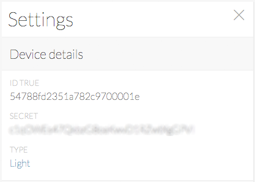
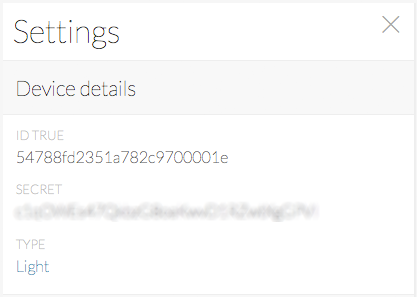

Code Explained
To better understand how the Arduino sketch works, follows a brief description of what
most important sections do.
Device Settings
The deviceId and deviceSecret are used to authenticate
the physical object (Arduino) with Lelylan. To get the device credentials open the
Dashboard, select the
desired device, click on settings and copy the Device ID and the Device Secret.
Lelylan uses MQTT, a publish subscribe protocol for the Internet of Things. To make
Lelylan communicate with Arduino you need to set two topics: one receiving messages
from Lelylan (inTopic) and one sending messages to Lelylan
(outTopic). These topics are unique and identified by the device id.
Finally, you need to set the MQTT client id, a random string not longer than 23 bytes.
JSON Payloads
Every message exchanged with Lelylan is made up by a list of properties where each of them
contains the property ID and the property value. For the type "basic light" we only have the
status property with ID 518be5a700045e1521000001 accepting the values
on and off.
To properly generete and parse JSON you can use the
aJSON library.
We tried too, but had some problems with the memory management.
If you make it work let @lelylan know.
If you want to know the property IDs of most common types or if you want to create your
own types, check out the Types Dashboard
or check out the Types API.
MQTT Signatures
To open the communication with Lelylan you need to initialize the MQTT client
settings by defining the MQTT server address, the MQTT server port, a callback function (called every
time a message is received from Lelylan) and the ethernet client.
Led and Button Pins
Here we define the pins used to connect the led and the button. If you have
followed the Fritzing diagram you don't need to
change anything. If you use different pins, remember to change these values.
Led and Button Logics
Here we define the variables you need to make the button work correctly. If you are
new to push buttons check out this
switch tutorial.
Arduino Setup
Here we define the setup function where Arduino connects to the Internet using DHCP.
When the connection is made, Arduino open the connection with the Lelylan MQTT server,
and set the led and button pin mode.
During the MQTT connection phase the client set the deviceId
as username and the deviceSecret as password. If the credentials
are missing or not valid, the connection will be rejected.
To keep the connection alive after temporary loss of internet connection we
check if the client is connected. When not, Arduino reconnects to Lelylan MQTT server.
This is why the lelylanConnection method is also defined into the loop
function (see below).
Arduino Loop
Here we define the loop function where we use a pushbutton as a switch. Each time
you press the button the led is turned on or off. To make it work we need to add a
debounce, otherwise everytime
you press the button a single press would be recognized as multiple press.
Once the push button is pressed (the led status changes) we publish a message to
Lelylan with the updated led status.
Publish Messages to Lelylan
To let Lelylan know when the led is turned on or off, you need to publish a message
to the MQTT out topic with the updated properties.
Receive Messages from Lelylan
When a user updates a device property using Lelylan Dashboard a message is published to
the topic devices/<DEVICE-ID>/get (in topic) and it's received from
Arduino through the callback function.
We check it the received message turns on or off the light and once the led status is updated,
a confirmation message must to be sent back to Lelylan to confirm that the physical changes
were successfully applied (if not, the device will keep being
pending).


 
